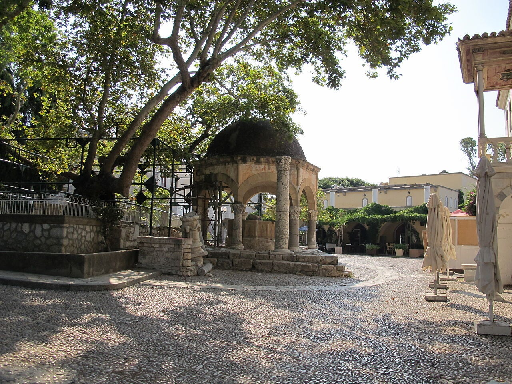
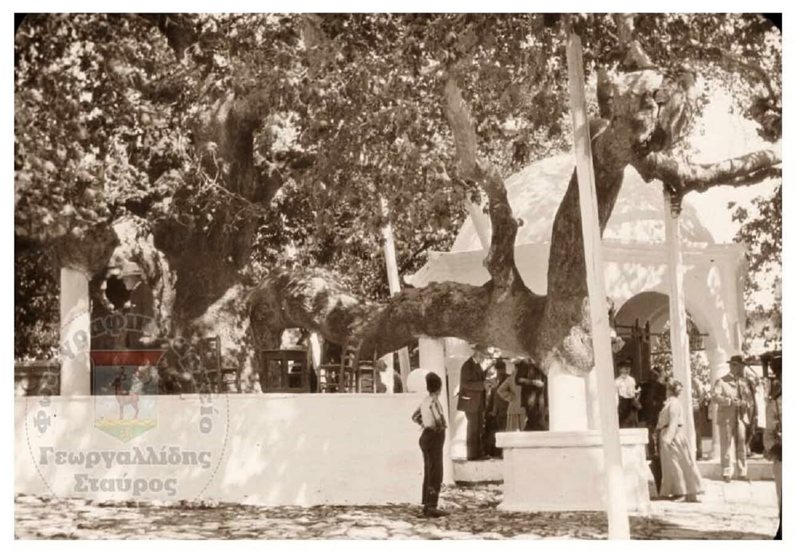
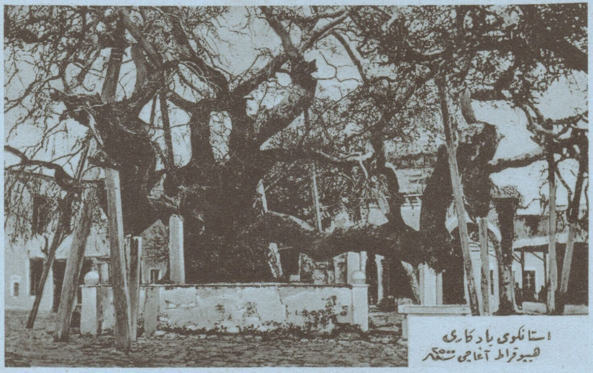

Moskee uit 1786 van admiraal Gazi Hasan Pasha – de “Leeuwenpasha” – bij de Boom van Hippocrates, met marmeren fontein en leeuwenbeelden.
De Leeuwenpasha
De Gazi Hasan-moskee in Kos-stad is gebouwd in 1786 door de Ottomaanse admiraal Gazi Hasan Pasha, bijgenaamd de Leeuwenpasha: hij had een tamme leeuw als metgezel die hem overal volgde, zelfs in veldslagen.
Bij de Boom van Hippocrates
Het bouwwerk staat op het centrale plein bij de legendarische plataan (Boom van Hippocrates). Het is twee verdiepingen hoog, op de plek van een oude Byzantijnse kerk (waarschijnlijk Sint-Joris). De bouwers hergebruikten stenen en marmer uit antieke gebouwen.

Fontein “Water van Hippocrates”
Naast de moskee ligt een prachtige 14-zijdige witte marmeren fontein met koepel. De inscriptie verwijst naar “Water van Hippocrates” – een knipoog naar de beroemde arts. Vroeger wasten gelovigen zich hier voor het gebed.
1821 – ophanging
In 1821, tijdens de Griekse opstand tegen de Ottomanen, werden hier 90 Grieken opgehangen aan de Boom van Hippocrates door de Ottomaanse gouverneur, als vergelding.
Minaret en leeuwen
De moskee was in gebruik tot ongeveer 1933, daarna in verval (Italiaanse periode en aardbeving). Bij de basis van de minaret staan leeuwenbeelden (onder meer een leeuw zonder kop en een marmeren leeuwenhuid), geplaatst na 1933 als eerbetoon aan de leeuw van Hasan Pasha.
Na schade door de aardbeving van 2017 is de moskee niet meer in gebruik voor gebeden; de buitenkant is wel te zien.

Detail
Op het pleinBezoeken
Op het plein bij de Boom van Hippocrates. Van buitenaf altijd te zien; niet in gebruik als gebedshuis.
Tip: bekijk de fontein, de leeuwenbeelden bij de minaret en de plataan ernaast – alles op een steenworp afstand.